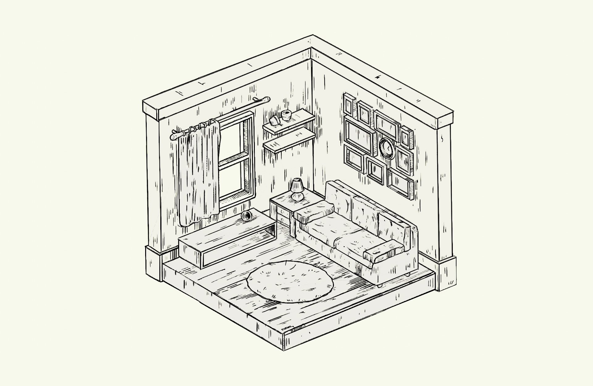
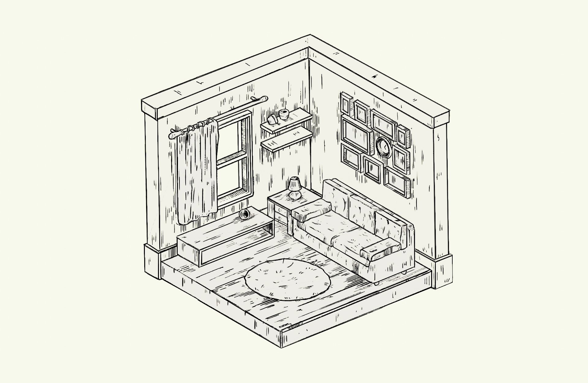

PT:
Este projeto, desenvolvido no âmbito da unidade curricular de Modelação e Animação 3D no Mestrado em Ilustração e Animação (ESD-IPCA), explora a criação de um espaço em perspectiva isométrica inspirado no estilo gráfico de Milton Caniff. Com base numa estética que remete à Banda Desenhada, o projeto visa desenvolver uma composição tridimensional em line art monocromática, onde o comprimento, altura e largura dos objetos são representados em ângulos iguais, sem sombras ou gradações de tom.
A metodologia do projeto inclui o uso do Blender 3D como ferramenta principal, com foco na modelação através do contorno de modo a transmitir tridimensionalidade sem a utilização de luzes ou texturas. A escolha da perspectiva isométrica reforça a clareza e o equilíbrio das formas e evita distorções permitindo uma leitura espacial objetiva com cada eixo a 120 graus entre si.
ENG:
This project, developed within the 3D Modeling and Animation course of the Master’s in Illustration and Animation (ESD-IPCA), explores the creation of an isometric perspective space inspired by the graphic style of Milton Caniff. Rooted in an aesthetic reminiscent of comic art, the project aims to develop a three-dimensional composition in monochromatic line art, where the length, height, and width of the objects are represented at equal angles, without shadows or tonal gradations.
The project’s methodology includes the use of Blender 3D as the primary tool, with a focus on contour-based modeling to convey three-dimensionality without the use of lights or textures. The choice of isometric perspective enhances clarity and balance in form, avoiding distortions and allowing for an objective spatial interpretation, with each axis set at 120 degrees to each other.
 
